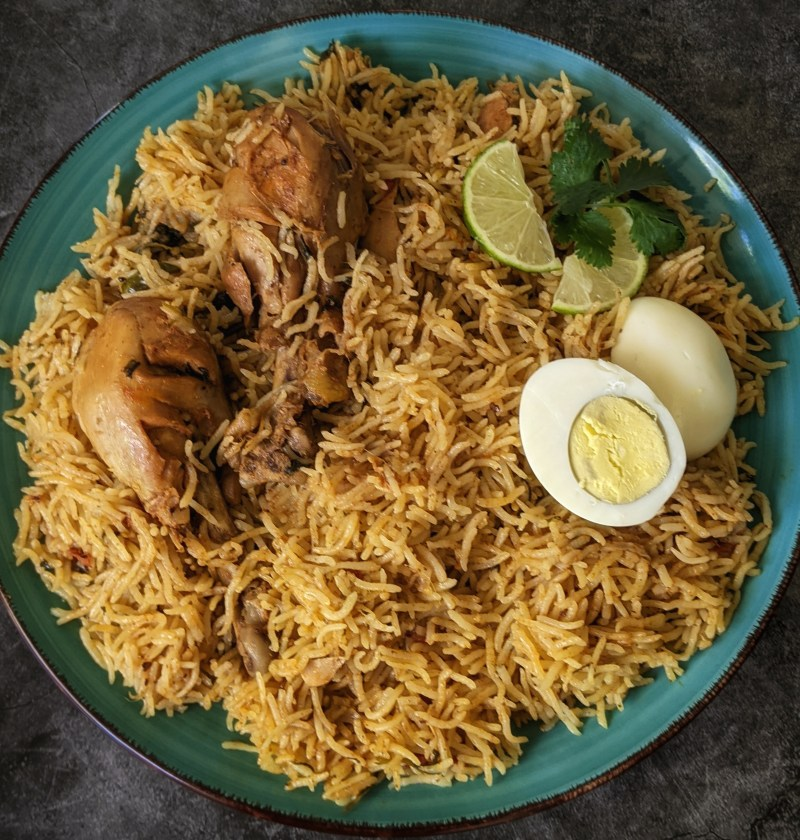

Chicken Briyani

Briyani is a mixed rice dish originating among the muslim in south Asia
It is a dish that is typically reserved for special occasions such as weddings, parties, or holidays such as
ramadan.
it has a lengthy preparation, but the work is definately worth it. For briyani basmatic rice is the ideal variety
used
| Prep Time: |
Cook Time: |
| 30min |
1hr 30min |
| Total Time: |
servings: |
| 2hrs |
5 |
Chicken Briyani is a healthy meal that can be easily prepared and here are a list of ingredients and steps to
prepare this meal.
ingredients to prepare Chicken briyani
- 4 tablespoons vegetable oil, divided
- 4 small potatoes, peeled and halved
- 2 large onions, finely chopped
- 2 cloves garlic,minced
- 1 tablespoon minced fresh ginger root
- 2 medium tomatoes, peeled and chopped
- 1 teaspoon salt
- 1 teaspoon chili powder
- 1/2 teaspoon chili powder
- 1/2 teaspoon ground tumeric
- 2 tablespoons plain yogurt
- 2 tablespoons chopped fresh mint leaves
- 1/2 teaspoon ground cardamom
- 1 (2 inch) piece cinnamon stick
- li 3 pouns boneless chicken,skinless chicken pieces into chunks
Rice
- 1 pound basmatic rice
- 3 tablespoons vegetable oil
- 1 large onion, diced
- 5 pods cardamom
- 3 whole cloves
- 1 (1 inch) piece cinnamon stick
- 1/2 teaspoon ground ginger
- 1 pinch powdered saffron
- 1.5 teaspoon salt
Steps
- Gather all ingredients
- Heat 2 tablespoons of oil in a laege skillet. Fry potatoes in hot oil until lightly browned, about 4
minutes. Remove to a paper towel-lined plate to drain; set aside.
- Add remaining 2 tablespoons of oil into the skillet. Add onions, garlic, and fresh ginger; cook and stair
until onion is soft and golden. Add tomatoes, salt, cumin, chili powder, pepper and tumeric; cook, stirring
constantly fot 5 minutes.
- stir in yogurt, mint, ground cardamom and cinnamon stick. Cover and cook over low heat, stirring
occasionally,until tmatoes are cooked to a pulp. It maybe necessary to add a little hot water if mixture
becomes too dry and starts to stick to the pan.
- Add chicken and stair well to coat. Cover and cook over low heat until chicken is tender, 35-45 minutes.
There should only be a little very thick gravy left when the chicken is finished cooking. If necessary cook
over a few minutes to reduce the gravy.
- Meanwhile, make the rice: wash well and drain in a colander for at least 30 minutes
- Heat oil in a large skillet. Add onions; cook and stir until golden. Add cardamom pods, cloves, cinnamon
stick, ground ginger, and saffron; stir in rice until coated with spices
- Heat stock and salt in a medium pot until hot; pour over rice and stair well.
- Add chicken mixtures and potatoes;stir gently to combine. Bring to a boil.
- Reduce heat to very low, cover with a tight-fitting lid and steam for 20 minutes without lifting the lid or
stirring.
- Serve onto a warm servind dish and enjoy your meal.